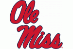

Master of Business Administration (MBA)
University of Memphis • Memphis, TN
Focus: Web Analytics • Summa Cum Laude • Chancellor’s List / Dean’s List
Strategic Product Leader specializing in legacy modernization, scalable platform solutions, and AI-driven initiatives.
University of Memphis • Memphis, TN
Focus: Web Analytics • Summa Cum Laude • Chancellor’s List / Dean’s List

University of Mississippi • Oxford, MS
Minor: English • Cum Laude • Chancellor’s List / Dean’s List • Luckyday Scholar • U.S. Senate Page
Cotality • Oxford, MS
Cotality • Oxford, MS
Cotality • Oxford, MS
DHL Supply Chain and Logistics • Memphis, TN
National & Regional Political Campaigns • TX, WV, LA, MS
Pragmatic Institute
May 2026Mortgage Industry Standards Maintenance Organization
November 2025Cotality Hackathon
November 2025Pendo
April 2025CoreLogic Aspire Certification
December 2024CoreLogic Aspire Certification
November 2024Mortgage Banking Association
January 2024Corelogic
February 2024Google Analytics Academy • ID: 74877917
March 2021Google Analytics Academy
March 2021Baton Rouge, Louisiana
April 2019